The Secret Society of Whales launched in August 2021 as a collection of 10,000 ERC-721 whales
minted at 0.05 ETH. What began as a mint with a roadmap of charity milestones grew into a
community-governed vault, a token economy, a gaming guild, and a run of collections spanning
Orcas, Wealthy Whales, Pixel Whales, and Collabs. This is the record of how it happened,
month by month, drawn from the community's own announcements.
2021
Launch, Mint, and Community Foundations
Founding Team
Founder / Project Manager: Big Jon
Developers: Squilliam and Charbo
Consultant: WestCoastNFT group, led by Richerd
Community Managers & Mods: sourced from the NFT community
The team emphasized transparency, community-first values, and a strong focus on education and utility.
Mint & Launch
10,000 ERC-721 whale NFTs, 0.05 ETH each, max 10 per mint
Launch announced for August 15, 2021; surprise window for fairness
Tutorials for website and smart contract minting provided
Sold out in days: 70% in 24 hours, 100% shortly after
Mint Milestones
10% — 20 whales airdropped
20% — BAYC NFT raffle
40% — NFT education campaign
60% — $25k each to Save the Whales & Mental Health America
80% — members-only merch store
90% — #TogetherWeWhale, 25 ETH community wallet
100% — LA mural commission
BAYC Raffle
BAYC NFT secured for raffle
Raffle open to all whale holders, including secondary
Winner selected via community event stream
Community
1,000+ Twitter followers, 700+ Discord members by early August
Invite contests, meme contests, and Twitter raffles for engagement
#TogetherWeWhale: 2% of secondary sales to the community wallet, with monthly votes to sweep or vote on projects
Community roles sourced from within
Charity
At 60% sales, donations to Save the Whales & Mental Health America completed
Receipts shared with the community
Security Orcas & Next Steps
Security Orcas: free mint for whale holders
Members-only merch and NFT education campaign in planning
First #TogetherWeWhale vote and giveaway event held
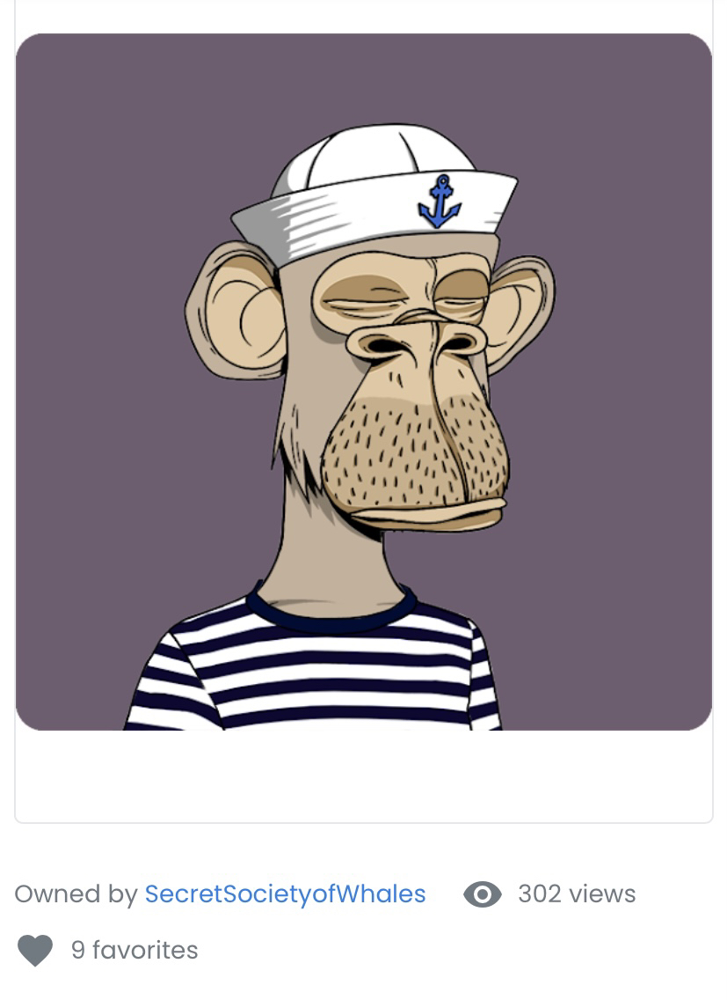
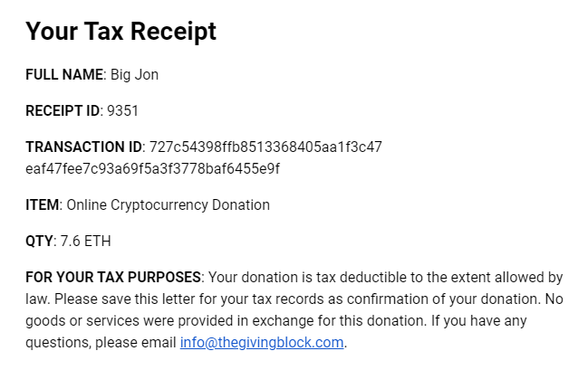
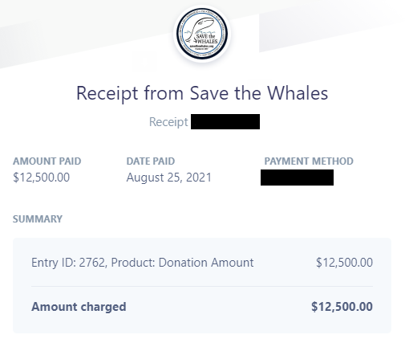
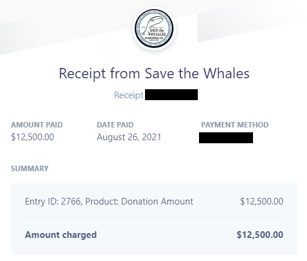
Community, Leadership, and New Initiatives
BAYC Raffle
The winner of the Bored Ape Yacht Club raffle was announced: Whale #6707.
Orcas
Project Orca details released: free mint for whale holders (1 per whale), not SSoW membership,
only gas required. Minting available for one week via the website.
Community & Leadership
@nigel.networks joined the SSoW team as Announcements Manager, running socials and
building collaborations.
Community elections held for key roles: Chief of Operations, Head of Content Creation,
Head Mod, Marketing Lead, Community Events, Community Relations, Marketing Team,
Announcements, Mods, and Content Creators.
Emphasis on community-driven leadership and sourcing roles from within the community.
TogetherWeWhale
Project nominations and voting continued. Top nominees included Gambling Apes, CryptoDads, Rogue Society, and Gauntlets.
Website voting integrations completed: each whale equals one vote.
Second #TogetherWeWhale vote held; Gambling Apes selected for a floor sweep. 25 Gambling Apes swept, to be given away at a community event.
Community Events & Media
A whale holder appeared on Benzinga's YouTube show, bringing more eyes to the project and
showcasing community strength.
Community voting began to select NFT projects for the LA mural.
After voting, a digital illustration would be commissioned, followed by mural creation in LA.
TogetherWeWhale & Events
Voting for #TogetherWeWhale 3 took place; top 4 projects moved to the final round.
SSoW hosted its first Trivia Night, with POAPs distributed to participants.
Community, DAO Vision, Poker, Collabs, and Orcas
TogetherWeWhale & Community
#TogetherWeWhale 3 voting concluded; Goons of Balatroon won the sweep (8 ETH spent, 50 Goons acquired).
Community events included the SSoW Survivor Pool and NBA Fantasy Pick 'Em Pool, with unique whale prizes.
First in-person Whale Event held at Dave & Busters, Times Square.
Plans announced to transition the community wallet to a DAO, with the $CIGAR token and a multisig vault for community proposals and votes.
25 Goons to be raffled, 25 held in the vault for future community decisions.
Poker Tournament
First SSoW Poker Tournament held, with 25 players and a prize pool split among the top 5.
Collabs
Two SSoW Collab pieces, including "Cthulhu," auctioned on OpenSea.
Orcas & Staking
Orca minting Q&A and launch: free for whale holders, mint by token or range, with utility in the upcoming staking ecosystem with $CIGAR.
Orca mint went live Nov 26, with reveal after the mint window closed.
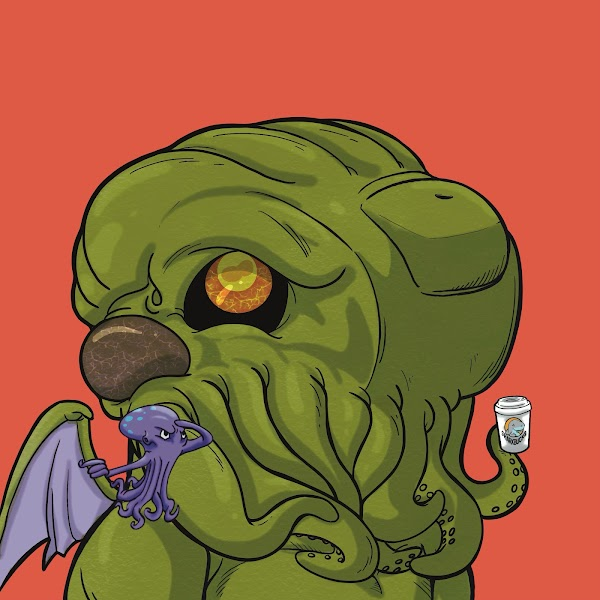
Orcas, Community, Charity, and Year-End Initiatives
Orcas Mint & Reveal
Security Orcas mint open until Dec 3; free for whale holders, just pay gas.
Orca minting closed and reveal occurred Dec 7.
Orcas play a key role in the upcoming staking ecosystem with $CIGAR.
Community Events & Winter Wonderland
SSoW Winter Wonderland Extravaganza: daily competitions and events — chess, poker, trivia,
movie night, Squid Games / Crab Game — with prizes including 1/1 Christmas Whales, floor whales,
orcas, and ETH.
Roadmap & Staking
Roadmap 2.0 introduced: new tiers, exclusivity, and gamified DAO governance.
Staking ecosystem: pairing Whales and Orcas to earn $CIGAR, redeemable for gems and NFTs from the Wealthy Whale Collection. Wealthy Whales get extra privileges and DAO access.
OG Role & Community
OG Whales inducted and given access to the Executive Lounge and DAO document.
Community engagement: Instagram management, holiday dressing room, and merch updates.
Charity
$1,000 donation to Toys for Tots from the community wallet.
End-of-Year Initiatives
North Star Initiative: community votes to sweep project floors, with NFTs raffled or held in the vault. DAO implementation planned for 2022.
New moderators and launch of Pod Squads for marketing, project research, vault management, social events, and collaborations.
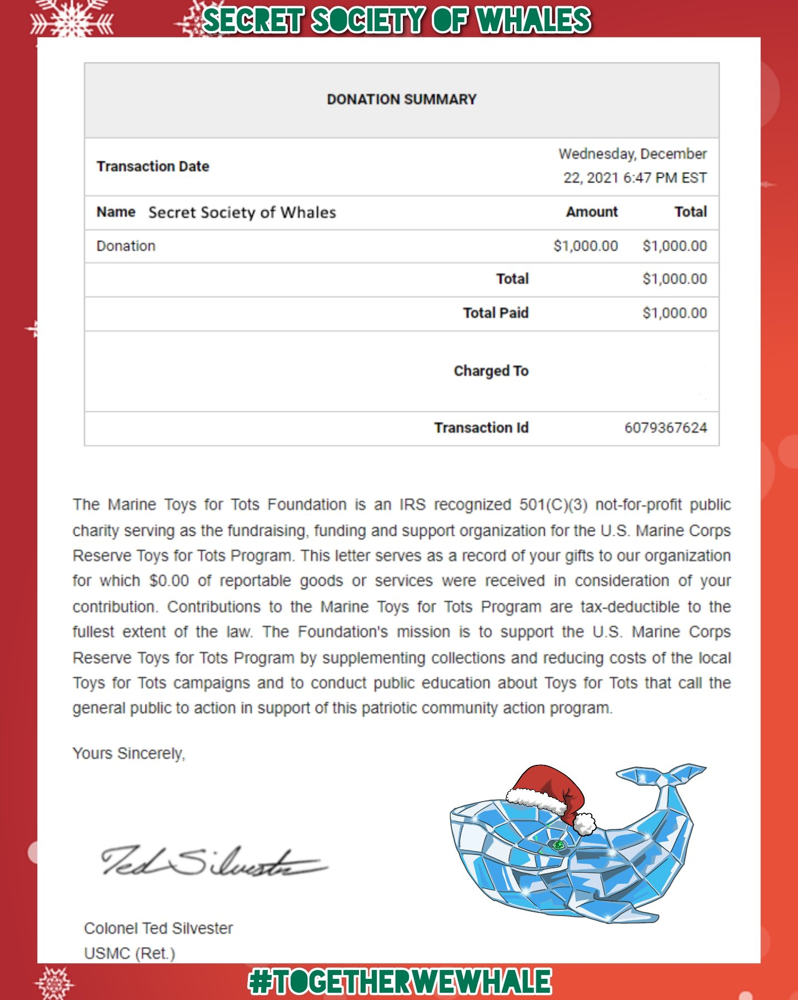
2022
Gaming, Partnerships, Staking, and the LA NFT Mural
Rumble Kong League & Coastal Kong Club
SSoW OGs proposed and approved putting community-owned Rumble Kongs into the
"Coastal Kong Club" (CKC), a top RKL club.
Goons of Balatroon Partnership
Goons of Balatroon honored SSoW by adding a whale to their Goon Card Game, recognizing the partnership after SSoW swept their floor in 2021.
Community encouraged to support Goons on social media.
Staking & Orcas
Staking rewards now available for every whale-orca and whale-whale pairing.
Orcas gain value in the ecosystem without diminishing whale value.
LA NFT Mural
All NFT tokens for the LA mural selected, featuring SSoW and major NFT projects:
Art Blocks, Axie Infinity, BAYC, CryptoPunks, Cool Cats, Gambling Apes,
Goons of Balatroon, Lazy Lions, ON1 Force, Rumble Kong League (CKC), CryptoDads,
VeeFriends, and World of Women.
Community helped identify and source tokens for the mural.
Community Engagement
OG whales and pod squads kept the community active and onboarded new members.
SSoW continued to build partnerships and strengthen its brand through collaborative initiatives.
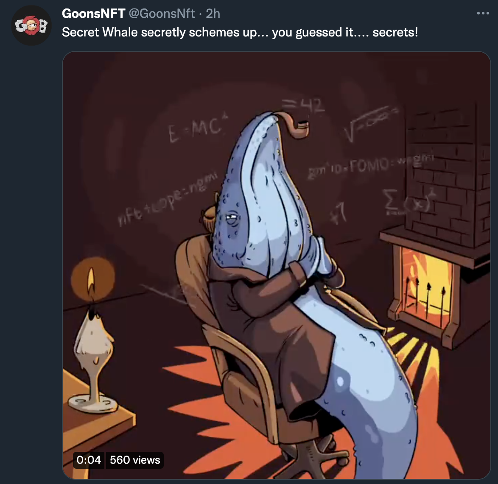
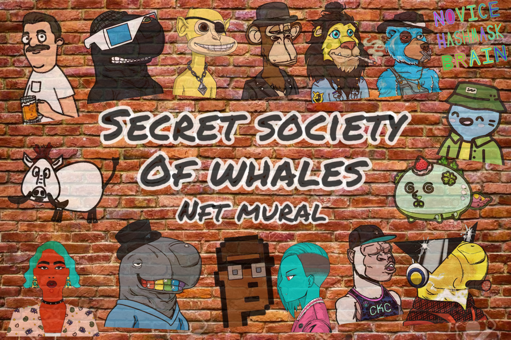
Staking, Merch, Charity, Alpha Bay, and Whale Adoption
Staking & Wealthy Whales
Staking system for Whales and Orcas launched, allowing users to earn $CIGAR and redeem for gems, sand dollars, and Wealthy Whales.
Wealthy Whales act as DAO tokens and grant membership to the DAO. Only 1,000 available to stake for.
Community voted for 6 gnosis wallet holders to manage the vault.
Staking UI and rewards system showcased.
Merch Launch
SSoW Merch Store launched with high-quality, limited edition items.
Free international shipping provided after initial issues resolved.
Alpha Bay
The alpha room closed for remodeling and reopened as "Alpha Bay" with new features and
channels for alpha proposals and links.
Whale Adoption
SSoW adopted a humpback whale named Lily through the Oceanic Society.
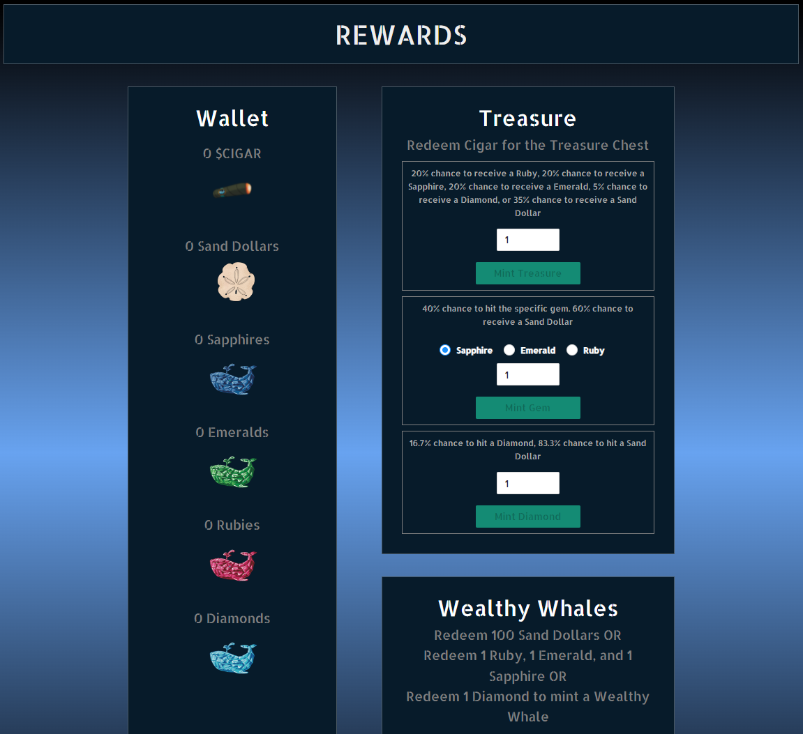
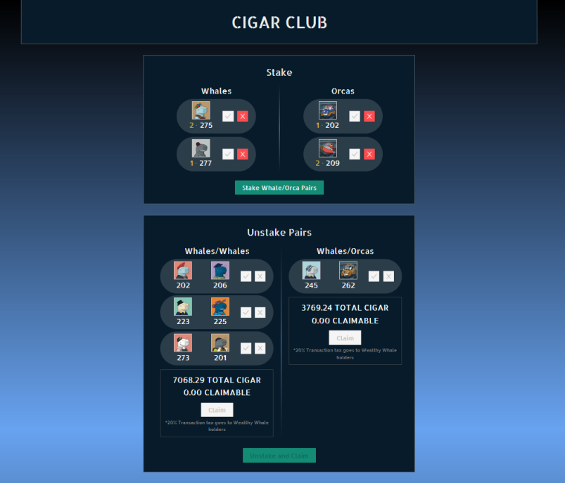
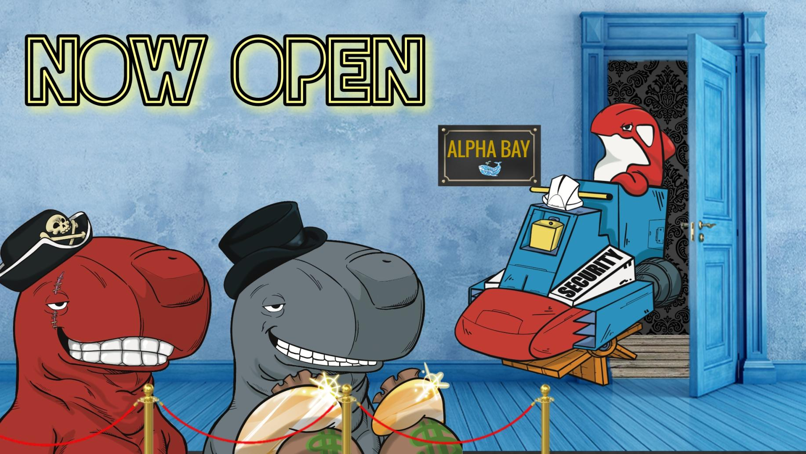
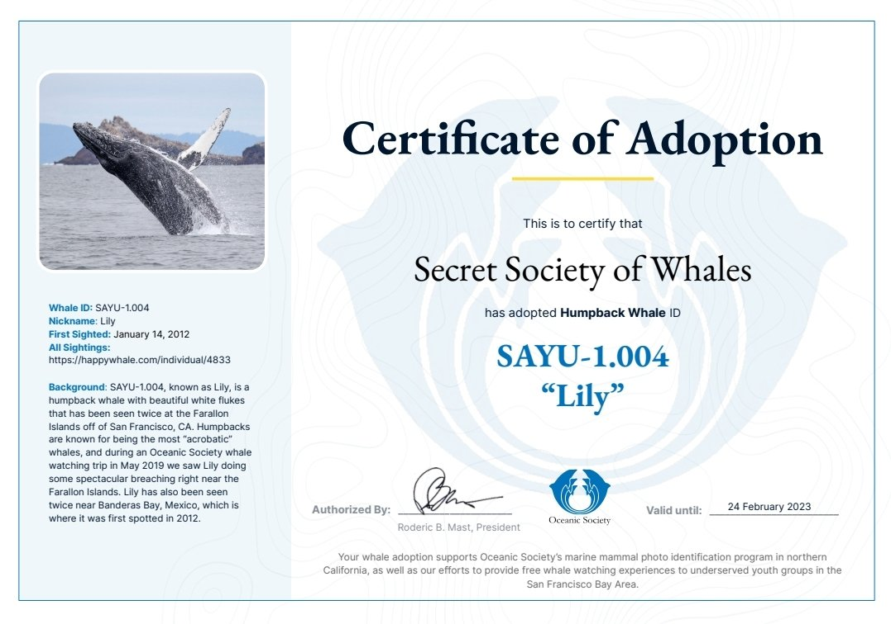
DAO, Gaming, Partnerships, and Community Growth
Wealthy Whales DAO & Mint
Wealthy Whales launched as DAO tokens, each representing 1/3000th of the SSoW Vault and DAO voting rights.
Pre-sale and public mint held, with community engagement and giveaways.
Gen 1 Wealthy Whales earned via staking, Gen 2 available for public mint; both have equal DAO rights.
Goons of Balatroon Partnership
Official partnership: whale holders can play the Goons F2P trading card game and earn $GOB token rewards.
Partnership highlighted as a model for inter-community collaboration.
NFT Worlds & Pixel Whales
SSoW acquired NFT Worlds #2036 as a metaverse home for the whales.
Pixel Whales prepared for integration into World Wide Webb and Pixels Online; airdropped to active holders, with the rest available via $CIGAR auction.
Staking & $CIGAR
Staking opened for Gen 2 Wealthy Whales, earning a 20% cut of all farmed $CIGAR.
Wealthy Whale public mint opened for 24 hours, with $WRLD as a payment option.
Whale University
Whale University launched as a free educational resource for all SSoW Discord members,
covering NFT and Web3 topics for all experience levels.
Community & TogetherWeWhale
Community sweep nominations and voting continued, focused on building the vault and returning value to the community.
New Community Manager: stumpyman69.
Emphasis on the #TogetherWeWhale initiative: collective action to make an impact in the NFT space.
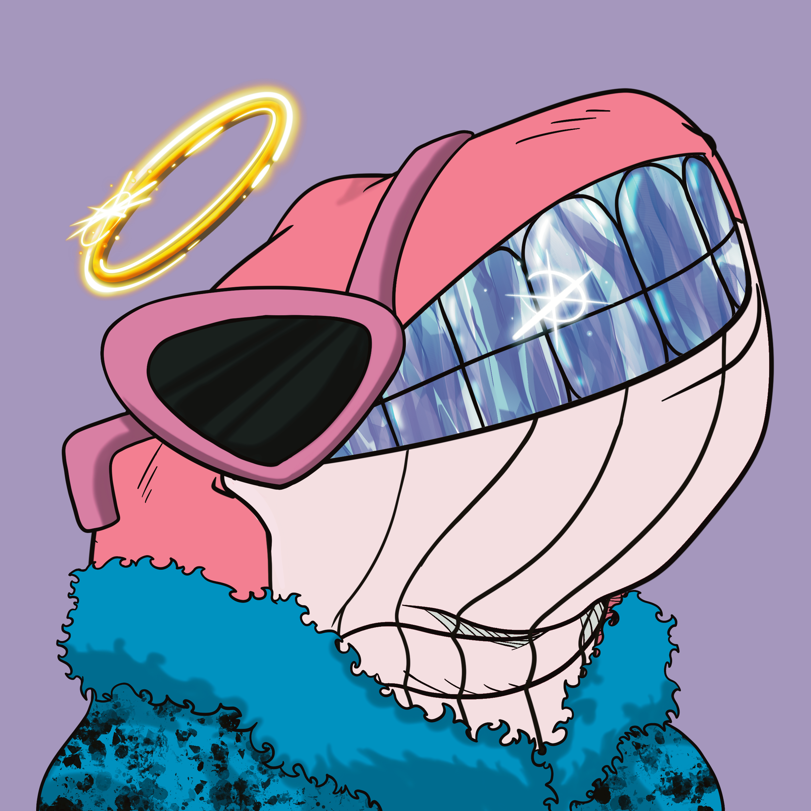
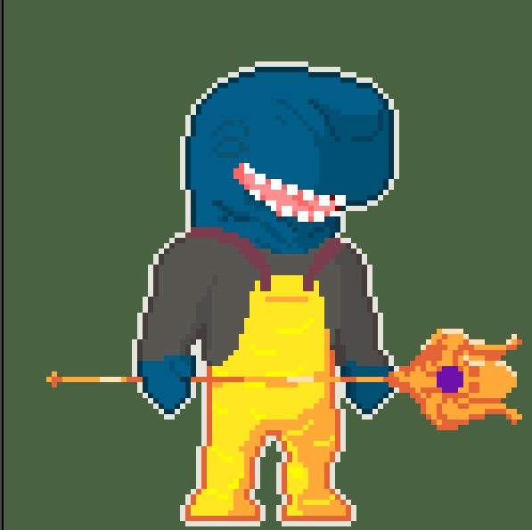
Project Sweeps, Nifty Island, and Community Engagement
TogetherWeWhale Project Sweep
Community nominated and voted on top projects for a 4 ETH floor sweep.
Finalists included Skvllpvnkz Hideout, Metasaurs, Barefoot Parrots Island, Sad Girls Bar, Rug Radio, The Cryptomoms, Buttheads, Gutter Juice, Huephoria, National Parks NFT, and Quiller Labs.
Barefoot Parrot Island won the vote and was swept.
Nifty Island Collaboration
SSoW partnered with Nifty Island, an open, social gaming platform and virtual world.
20 Alpha Passes raffled to the community for a building competition; Wealthy Whales and active Whale Raiders had priority.
Winners could showcase their island builds, with the best potentially becoming the official SSoW island.
Community Engagement
Continued focus on community-driven initiatives, project nominations, and collaborative events.
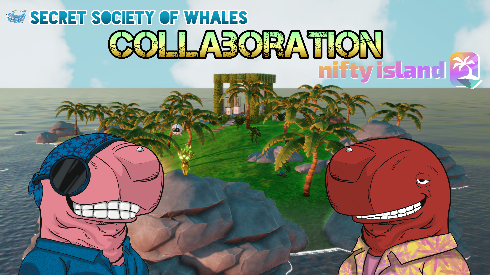
Merch, Pixel Whales, Miss Metaverse, and Community Events
Merch & IRL Prints
Offer from ghedoicy.eth to create high-quality glass prints of OG Whales, Orcas, Wealthy Whales, or Pixel Whales.
Prints available in 5x5, 11x11, and 23x23 sizes; 15% of sales go back to the SSoW wallet for future sweeps.
Community giveaways for free prints.
Pixel Whale $CIGAR Auction
Pixel Whale Dutch Auction announced and launched, using the $CIGAR token.
Auction started at 100k $CIGAR per pixel whale, decreasing to 20k over 48 hours.
Gas-optimized minting, instant reveal, and a 10 per transaction limit.
Alpha Bay & Community
Alpha Bay Twitter Space hosted for NFT discussion and sharing alpha.
Community encouraged to participate and share project insights.
Miss Metaverse Acquisition
SSoW acquired the Miss Metaverse NFT brand, vault, and assets after a community vote.
Miss Metaverse holders integrated into the SSoW Discord with their own role and room.
IRL Events & Sweep Week
Plans for an IRL Cigar Lounge meetup at NFTNYC in June.
Sweep Week ambassadors introduced to connect nominated projects with the SSoW community.
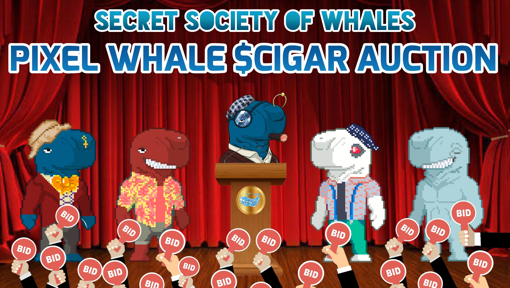
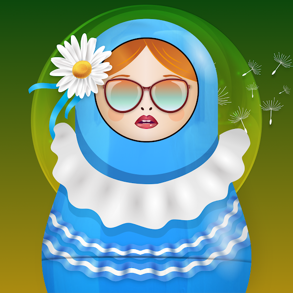
NFT Worlds, Sweep Week, Pixel Whales, and IRL Events
NFT Worlds Metaverse Buildout
SSoW completed the buildout of their NFT Worlds city, featuring the Metaverse Cigar Club as the epicenter.
The city includes a variety of buildings, houses, apartments, and condos for whales to explore and own.
Real estate in the metaverse will be purchasable with $CIGAR and ETH, attached to separate NFTs.
Sweep Week & Community Voting
Sweep Week voting engaged the community and nominated projects, culminating in a sweep of the winning project.
June's sweep winner: The CryptoDads.
Pixel Whale Animations & Integration
Pixel Whale animations completed, enabling them to walk and interact in metaverse environments.
Integration talks underway for interoperable metaverses.
IRL Events
SSoW hosted an NFT NYC meetup at Petrarca Cucina e Vino, NYC, with cigars, food, and drinks
for whale holders.
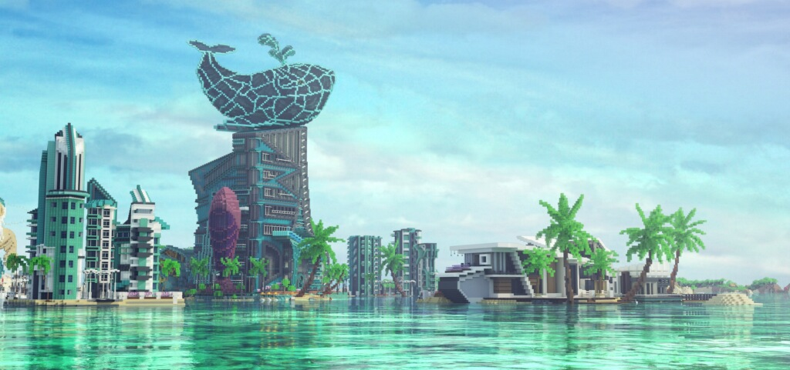
DAO Proposals, NFT Worlds, and Community Events
DAO Proposals & Voting
Wealthy Whale holders can create DAO proposals for actions with the community wallet; all whale holders can vote.
Proposal: trade of Barefoot Parrot #1175 for 1 Barefoot Pirate passed via community vote.
DAO backend systems being built out for more streamlined proposal creation and voting.
Live DAO vote held on buying land in the Goons of Balatroon's upcoming land sale.
NFT Worlds & Metaverse Update
Minecraft announced a ban on blockchain/NFT integrations, impacting NFT Worlds and the SSoW Whaleverse.
SSoW paused work on NFT Worlds metaverse real estate and functionality, shifting focus to integrating Pixel Whales into other metaverses (WorldWideWebb, Pixels Online).
Continued commitment to community strength and adaptability in the face of Web3 challenges.
Poker Tournament & Community Events
Poker tournament hosted for whale holders with cash prizes.
Ongoing encouragement for community participation in proposals, events, and discussions in the Cigar Club.
Anniversary, IP Rights, Roadmap, and Community
Anniversary & Art Stream
SSoW celebrated its 1-year anniversary with a week of events and activities.
An interactive art stream with Jared Jestr kicked off the celebrations, with community participation and prizes.
IP Rights & Community Empowerment
SSoW reaffirmed that holders have full IP rights to their whales, enabling derivatives, merch, album covers, brand logos, and more.
Use of the SSoW logo requires approval; otherwise, holders are encouraged to create with their IP.
Roadmap & Vault Proposals
Roadmap release and Discord AMA scheduled, with a focus on new opportunities in the bear market.
Metaverse Sweep Week planned to add metaverse land assets to the vault for future value and community use.
Active vault proposal to obtain more funds for future sweeps, with community voting and discussion in the Cigar Club.
Pixel Whale Integrations
Pixel Whale integration into metaverses such as Worldwide Webb progressed, with updates
expected as platforms completed their V2 updates.
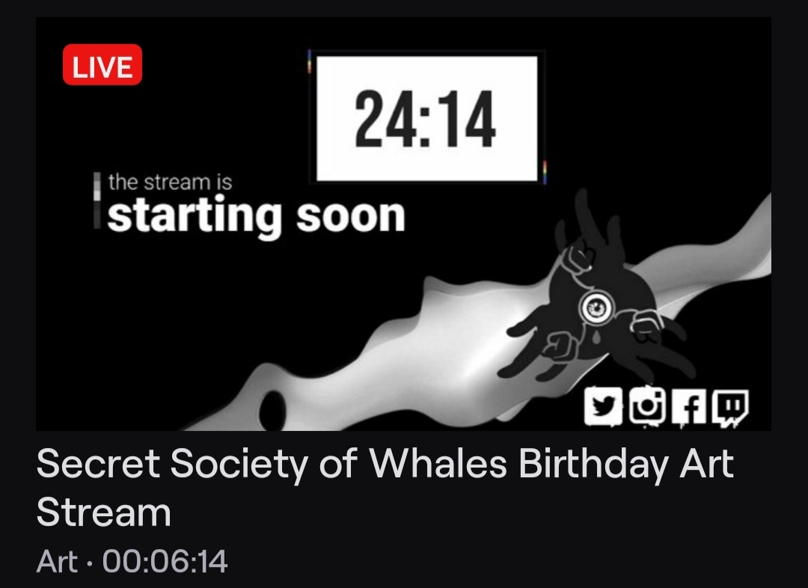
Roadmap 2.0, The Mad Knight, and Metaverse Expansion
Roadmap 2.0 Launch
SSoW unveiled Roadmap 2.0, focused on three core areas: Pixel Whale integrations, a new story-based NFT series ("The Tale of the Secret Society"), and expanded long-term utility for $CIGAR, including an auction house and gamified mechanisms.
The roadmap was detailed in a Medium article and discussed in a Twitter Spaces AMA.
Tales of the Secret Society: The Mad Knight
The first story in the new lore series was released as a Twitter thread, introducing
narrative-driven content to the SSoW ecosystem.
Metaverse Sweep & DAO Activity
The community voted in the monthly Metaverse Sweep, resulting in the acquisition of Otherdeed and Worldwide Webb Apartments for the whale vault.
DAO motions were planned for the following week to determine the use of these new assets.
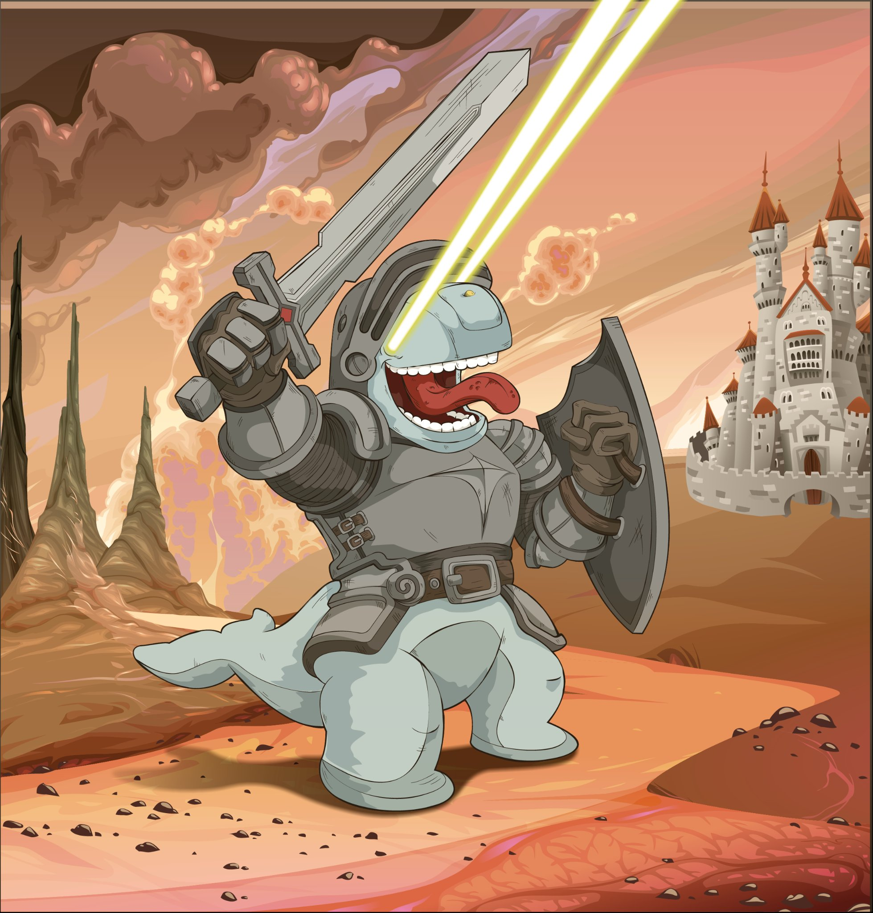
DAO Proposals, Partnerships, and $CIGAR Utility
Wealthy Whale DAO Proposal & Community Voting
A new Wealthy Whale DAO proposal allowed whale holders to vote on using the Doubleweb3 capsule system to raffle a vault item, with proceeds returning to the vault.
Community discussion and voting took place in the Cigar Club, emphasizing the importance of diverse opinions in DAO decisions.
The DAO voted to raffle a Barefoot Parrott using Doubleweb3 capsules, with details shared in a Medium update.
Quix Partnership & $OP Quest
SSoW became a pre-approved collection for earning trading rewards in the ongoing $OP quest on Quix.
The partnership was highlighted during Whale Wednesday and Alpha Bay events, and new users from Optimism were welcomed into the community.
First $CIGAR Auction & New Partnership
SSoW announced its first $CIGAR auction, set to open in early November as a silent auction.
The top three bids would win boxes of top-tier IRL cigars, courtesy of a new sponsored partner.
$CIGAR Auction, El Septimo Partnership, and Community Engagement
First $CIGAR Auction & El Septimo Partnership
SSoW launched its first $CIGAR auction in partnership with El Septimo Cigars, offering three boxes of premium cigars (valued at $400-$500 each) as prizes.
Conducted as a silent auction, open for 48 hours, with the top three bids winning a box each. International winners could opt for an ETH equivalent if shipping was not possible.
Auction Results & Community Participation
The auction concluded with over 135 million $CIGAR bid in total.
This event marked the beginning of Roadmap 2.0 $CIGAR rewards, with more auctions and rewards planned.
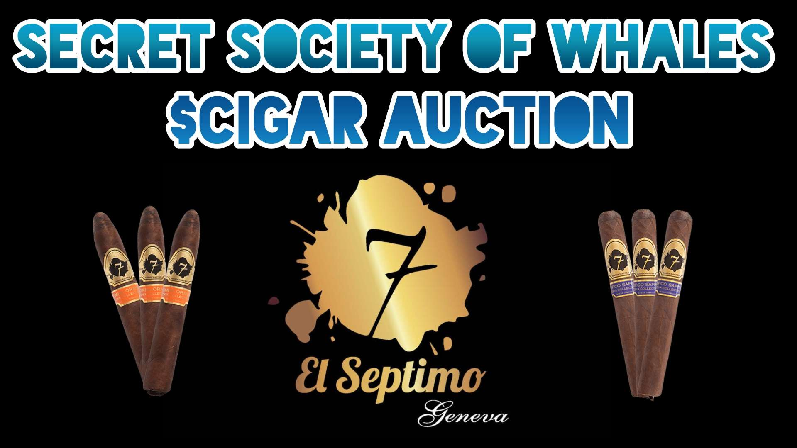
Pixels Online Integration and Metaverse Expansion
Pixels Online Integration Goes Live
SSoW announced a live integration with Pixels Online, an MMORPG metaverse game where players can quest, build, farm, and adventure together.
OG Whale holders can use their whales as avatars in Pixels Online by connecting their wallet and selecting their whale in-game.
The integration supports ETH NFTs, so OG Whales are used as keys for metaverse avatars. Staked whales are not yet supported, but a solution is in development.
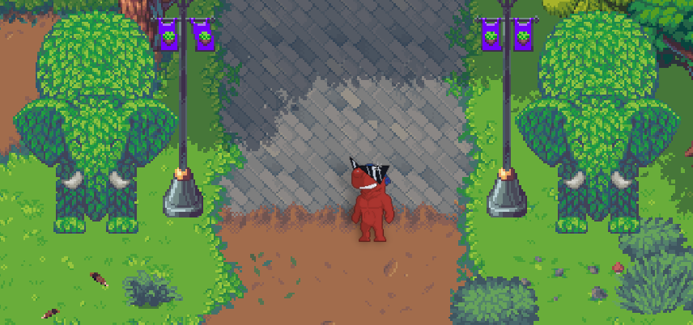
2023
$CIGAR Auction, Alpha Bay Challenge, and Community Initiatives
Second $CIGAR Auction Launch
SSoW announced the second $CIGAR auction, featuring individual El Septimo cigars up for silent auction via the SSoW website.
The auction opened February 10th, with 10 cigars available to the 10 highest bidders over a 48-hour period.
Auction Results & Community Engagement
Winners were announced, with several community members winning multiple cigars.
DAO Proposal 11: Alpha Bay .5 to 5 ETH Challenge
DAO Proposal 11 passed, launching the Alpha Bay .5 to 5 ETH Challenge.
0.5 ETH was moved from the vault to a new proxy "Alpha Bay" wallet, with the goal of growing it to 5 ETH through community-guided NFT trading.
All actions and moves are discussed in the token-gated Alpha Bay Discord section, with no formal DAO votes, for flexibility.
The Alpha Bay space was opened for community discussion and strategy planning.
Vault Spring Cleaning, Bantam Giveaway, and Community Events
Vault Spring Cleaning Proposal
Launched to give the community more flexibility with vault liquidity for initiatives like Wealthy Whale DAO proposals, future sweeps, and community events.
All Whalified members were encouraged to participate in the discussion and voting, with a focus on respectful and inclusive dialogue.
SSoW Bantam Giveaway Week
Bantam Giveaway Week kicked off, funded by Vault Proposal 14.
All original SSoW whales purchased between the announcement and Friday at 6pm EST were eligible for the raffle, with each whale purchased counting as one entry.
A Bantam pack opening stream was held in the SSoW Discord, followed by a raffle for 4 Standard Bantam Packs and 1 Chaos Bantam Pack.
A mystery prize was available for those who tweeted their favorite whale with #SSoWBantamRaffle and tagged @SSofWhales.
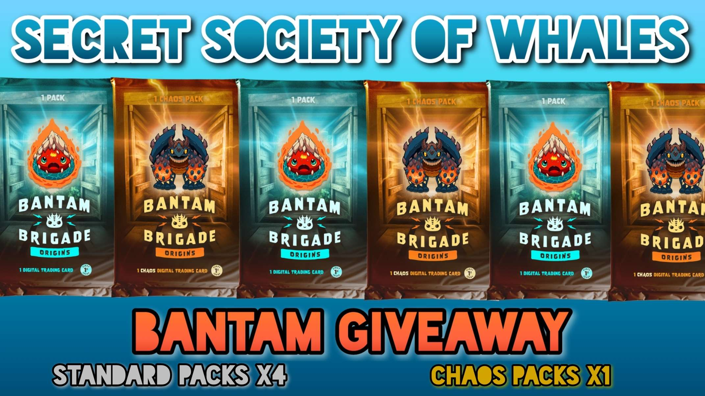
Vault Coordinator Nomination and Community Revitalization
Nomination of SSoW Vault Coordinator
A proposal was made to nominate @champ for the volunteer position of SSoW Vault Coordinator.
The role is designed to help facilitate, organize, and move forward action plans related to
the vault, including organizing proposals, holding votes, and coordinating with leadership.
The goal is to leverage vault assets to bring renewed activity and organization to the
community.
Community Confirmation and Moving Forward
The community unanimously supported the nomination, and @champ was confirmed as the SSoW
Vault Coordinator with leadership's approval.
Parrot Sale Proposal and WOTF Partnership
Barefoot Parrot Sale Proposal
A proposal was made to sell a portion of the community's Barefoot Parrots in response to increased interest from the BPX Wonders of the First (WOTF) collection.
Options included selling 0, 3, 5, or 7 parrots at a listing price of 0.2 ETH each, with a 30-day listing duration.
Community members voted on the number of parrots to sell, with the vote running for 48 hours.
WOTF Partnership with Mojaveo
SSoW partnered with Mojaveo to maximize WOTF claims by pairing surplus parrots and miners.
The partnership allowed the community wallet to receive an extra 8 WOTF NFTs, while Mojaveo received an extra 5 WOTF compared to pairing miners only.
A snapshot for the WOTF drop was scheduled for October 1st, with parrots sent to Mojaveo's wallet and held until the drop in November.
Pixels Farm Land, WoTF NFTs, and Vault Activity
Pixels Farm Land Proposal and Purchase
A proposal was made to buy a Large Pixels Farm Land plot for the SSoW vault, aiming to provide a space for community events and in-game activity.
The community voted overwhelmingly in favor, and the land was purchased for the vault.
The floor price for Pixels Farm Land increased significantly during the proposal period, highlighting strong community timing.
Proposal to Sell Unrevealed WoTF NFTs
A proposal was introduced to sell five unrevealed Wonders of the First NFTs during the initial launch hype, with options based on floor price.
The community voted to sell five WoTF NFTs if the floor price was over 0.25 ETH. The claim period started at the end of November, with reveal scheduled for December 7th.
Parrot and WoTF Returns to the Vault
Mojaveo returned 25 parrots and sent 8 additional WoTF NFTs to the vault, maximizing the community's claim potential.
Transaction hashes were provided for transparency and verification.
Proposal to Buy $BERRY for Pixels Online
A proposal was made to use vault funds to buy $BERRY, the in-game currency for Pixels Online,
to support guild creation and purchase in-game assets for the community. The proposal included
options for different funding levels and was open for discussion and voting.
WoTF Reveal, Pixels Guild, and Community Gaming
Proposal to Sell Rare WoTF NFTs
A proposal was made to sell rare Wonders of the First NFTs from the vault if any revealed as rare, with a minimum price target of ~$10k USD (~4.4 ETH).
The proposal passed with strong community support, and sales would only occur for high-value rares.
$BERRY Purchase and Pixels Online Guild Creation
The community approved using $500 from the vault to purchase 500,000 $BERRY, enabling creation of the SSoW guild and upgrades to Whale Land 4279.
The purchase included a Silk Slug Hutch kit, golden whale statues, slabs, a pirate flag, and guild registration, with extra berries reserved for future events.
SSoW Guild Launch and Whale Pixel Party
The SSoW guild launched in Pixels Online, with a roadmap for future guild features and events.
A Whale Pixel Party was held December 21st at Whale Land 4279, featuring whale races, giveaways, and community activities.
SubwayRats x SSoW "Off The Rails" Community Event
SSoW partnered with SubwayRats for a community gaming night featuring "Off The Rails," a battle royale train game with whale avatars, prizes, and raffles.
Instructions and prize details were provided for participants.
Pixels Online Farming Competition
SSoW hosted a Pixels Online farming competition, with an OG whale NFT as the grand prize.
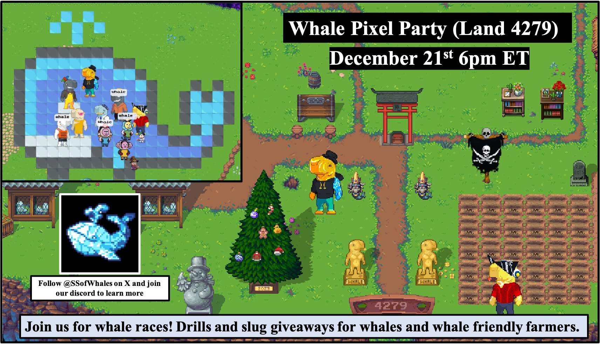
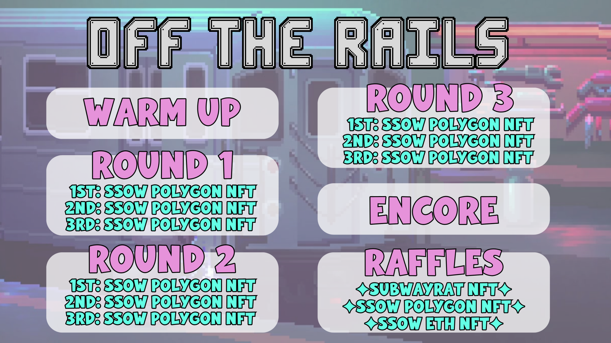
2024
Farming Competitions, 3D Whale Models, Nifty Island, and Major Listings
SSoW January Farming Competition (Pixels Land #4279)
SSoW hosted a January farming competition on Pixels land #4279, with daily crop planting and screenshot submissions in Discord.
Prizes included an SSoW Whale NFT, 5k berries, butterbrews, energy drinks, and bees.
Goons of Balatroon x SSoW New Year Poker Collaboration
SSoW holders were invited to a free-to-play Texas Hold'em poker event with Goons of Balatroon,
POSers, and MBU, featuring a $100 prize pool and Silver Genesis Packs.
Proposal and Vote: 3D Whale Models for Nifty Island
A proposal was made to free up funds for the creation of 3D whale models to enable SSoW integration with 3D games like Nifty Island.
The community voted overwhelmingly in favor of selling select assets to fund at least one vault whale and one or more community whale 3D models.
SSoW Whale Avatar Launch on Nifty Island & Community Game Night
SSoW whale avatars became available in Nifty Island, allowing holders to use their whales as in-game avatars.
A community game night was announced to celebrate the launch, held on Doc's Whale Island in Nifty Island.
Major Listing: "The First" WoTF NFT
Following the vault's win of "The First" in the WoTF Bloxpax series, a preliminary vote and final proposal were held to list the NFT for $100,000 USD (43.5 ETH) for two weeks.
The proposal passed and the NFT was listed, with the community encouraged to spread the word to collectors.
SSoW participated alongside Dizzy Dragons and Farm Hands.
The event was held February 23rd, streamed on Twitch, and featured prizes for participants.
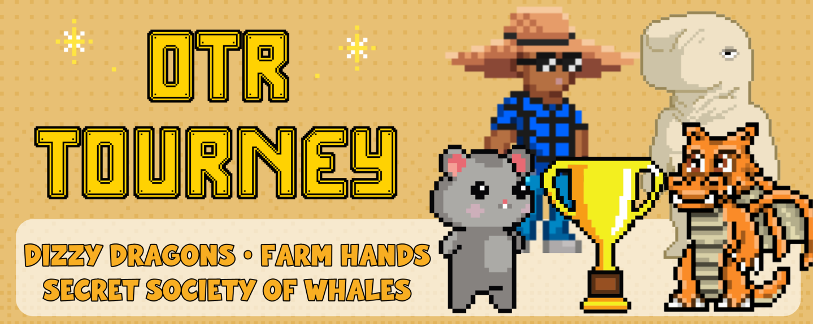
Pixels Guild Launch & Vault Spring Cleaning
Secret Society of Whales Guild in Pixels Online
The SSoW Guild launched in Pixels Online, providing members access to two lands: 4279 (regular) and 3141 (water).
25 guild membership shards distributed to whale holders on the watch list and raffled to previous monthly farmers.
Whale holders can join the request list and contribute land or resources to the guild.
Vault Spring Cleaning: Community Asset Vote
The annual Vault Spring Cleaning event was held, with all items except a few designated ones up for community vote to sell or keep.
Community members voted via a form, with voting open for one week.
Results: WOTF and RKL remain in the vault, Cryptodads fully sold, and all other assets involved in the proposal half sold.
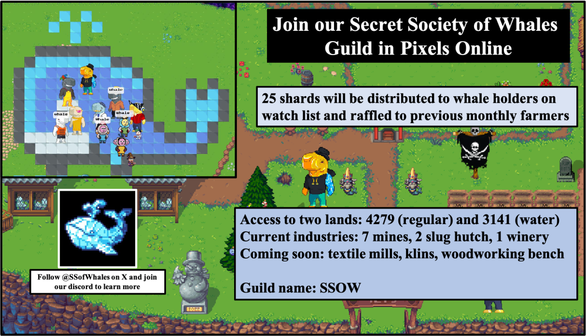
Whale Renting, New Mints, and Vault Proposals
Whale Renting Launches on LootRush
SSoW whales became available for rent on LootRush, allowing users to rent or list their whales
for use in Pixels Online — opening up more accessibility and utility for whale holders
and players.
Fishballerz and The Swarm Mint Proposal
A proposal was made and passed to mint 5 Fishballerz NFTs by Sloppy Studios and up to 10 of
their upcoming collection, The Swarm.
Proposal to Sell Pixels Farm Land #4279
A proposal was introduced to sell Pixels Farm Land #4279, originally purchased for 0.41 ETH in November 2023.
The proposal cited changes in Pixels Online, the evolving utility of land, and the opportunity to sell at a higher price. The plan was to list at 1.5 ETH and lower towards the floor if needed, with an option to repurchase in the future.
Community voting opened and ran until May 31st.
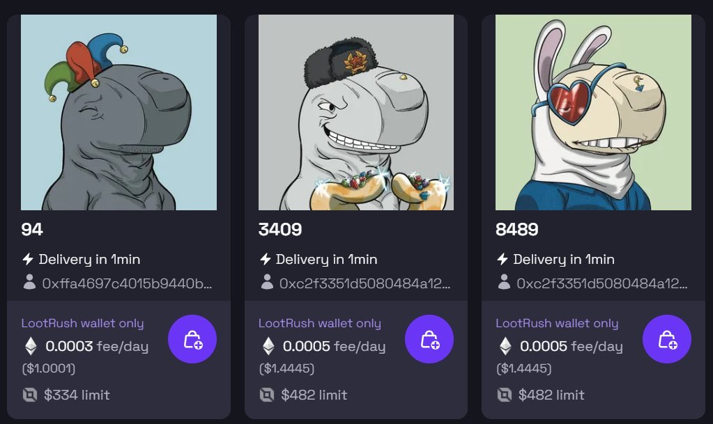
Vault Profit & The 8102 Game Integration
Sale of Pixels Farm Land #4279
The proposal passed, and the land was sold for 1.31 WETH — about $4,000 profit for the vault.
The team planned to monitor land prices and potentially repurchase if prices dropped, as indicated in the original proposal.
SSoW Integration in The 8102 Game
SSoW whales were integrated into The 8102 Game, a browser-based squad-building game by
Ape 8102.
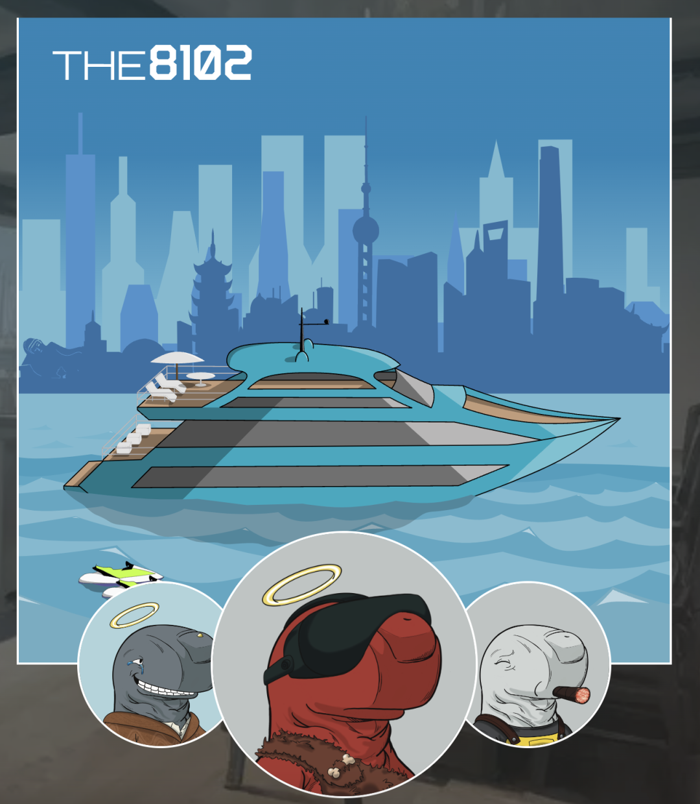
Vault Acquires Mutant Ape Yacht Club NFT
Proposal to Buy a MAYC or Doodles NFT
A proposal was made to use up to 1.8 ETH from the vault to purchase either a Mutant Ape Yacht Club or Doodles NFT for a long-term flip, taking advantage of the down NFT market.
Background was provided on both projects: MAYC as part of the BAYC ecosystem, and Doodles with an upcoming TV show.
The proposal was open for discussion and then put to a community vote.
Community Vote and Results
Voting was held via a Google Form with three options: buy a MAYC, buy a Doodle, or do not buy anything.
The community chose Option 1: buy a MAYC for a long-term flip.
The proposal highlighted the original #TogetherWeWhale Initiative and encouraged ongoing community participation in vault decisions.
Purchase of MAYC #2950
MAYC #2950 was purchased for 1.64 ETH and added to the vault.
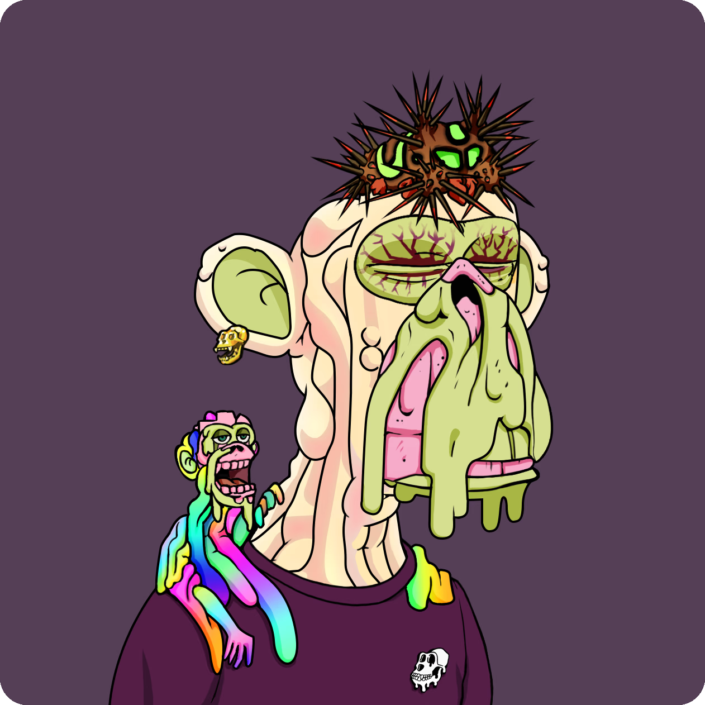
Vault Acquires Sandbox Metaverse Land
Proposal to Buy Metaverse Land
A proposal was made to use up to 0.4 ETH from the vault to sweep metaverse land, with options for Sandbox or Decentraland.
Background highlighted Sandbox's builder tools, avatar creation, and history of airdrops, and Decentraland's event hosting and advertising opportunities.
The proposal was open for discussion and then put to a community vote.
Community Vote and Results
Voting was held via a Google Form with three options: buy Sandbox land, buy Decentraland land, or do not buy anything.
The community chose Option 1: buy Sandbox lands.
Purchase of 4 Sandbox Lands
Four Sandbox lands were purchased and added to the vault. Community members were invited to help build on these lands.
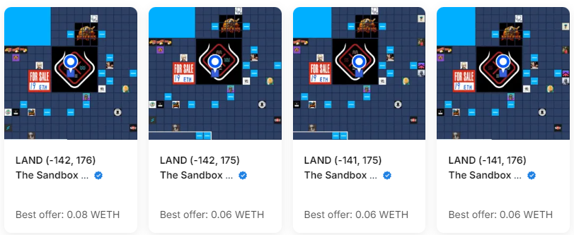
Sale of Wonders of The First Token 0 ('The First')
Proposal to Sell 'The First'
The SSoW community received an offer from AlphaTrilogy to buy Wonders of The First Token 0 from the vault for $21,500 USDC, or equivalent ETH.
Background was provided on the Wonders of The First project, its historical significance as the first collection minted on Ethereum's Proof-of-Stake, and the lore of 'The First' token.
Community Discussion and Voting
The proposal was open for discussion, with community members weighing the pros and cons of the sale.
Voting was conducted using the Echo bot for secure, wallet-verified voting, with each OG whale held counting as a vote.
Results and Sale Completion
The proposal passed, with the community voting to accept the $21,500 USDC offer.
The sale was completed and 'The First' was transferred to AlphaTrilogy.
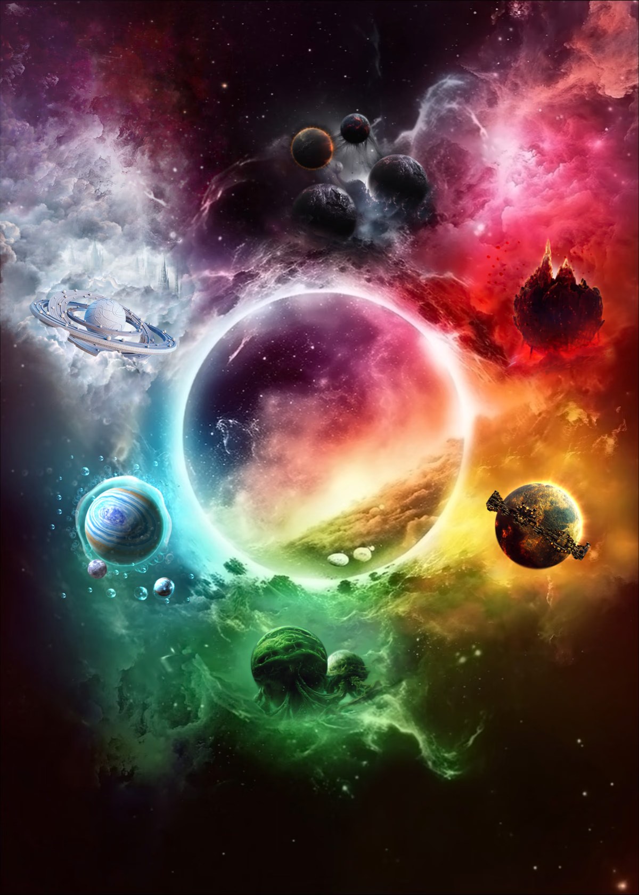
Vault Expands with New NFTs, Tools, and Community Engagement
Otherdeed Expanded NFT Buy Proposal
A proposal was made and passed to buy up to $2,000 worth of Otherdeed Expanded NFTs for the
vault, citing Otherside's OG metaverse status and market momentum.
Proposal Voting Bot Updates & $PENGU Giveaway
The proposal voting bot was updated to support new wallet verification methods, including self-transaction on Ethereum or Base, alongside continued OpenSea bio verification.
A $PENGU giveaway was launched, with entries tied to wallet verification and voting participation.
Degen Toonz, DeadFellaz, and Khuga NFT Proposals
Proposals were made to buy $2k USD worth of Degen Toonz, DeadFellaz, and Khuga NFTs, each with background on the project, pros/cons, and market context.
All three proposals passed following community discussion and voting.
The Degen Toonz, Khugas, and DeadFellaz were purchased and added to the vault.
Bantam Brigade: Origins Packs for Lost Miners Trade Proposal
A proposal was introduced to trade 41 unopened Bantam Brigade: Origins standard packs for
25 Lost Miners, with background on the Cosmics transition and the future value of unopened
packs.
Drip Bot Launch for Community Engagement
The Drip bot was added to the server to reward engagement and activities with points, which
can be redeemed for rewards and used for future raffles.
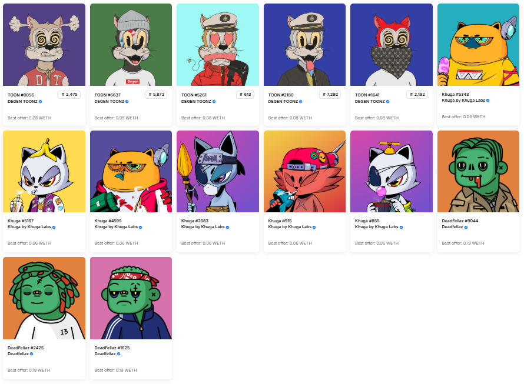
2025
New Vision, Vault Diversification, and Community Initiatives
SSoW 2025 Vision & Roadmap
The team shared a new vision for SSoW in 2025, built on three pillars:
Community Governance Vault — ongoing community voting on purchases and sales to build portfolio value.
Gaming Guild & Metaverse — whale IP integrated in Pixels Online, Nifty Island, and Hytopia, with an active Pixels guild and a 3D diamond whale in Nifty Island.
IP & Physical Product — launch of the Secret Society of Whales Cigar Collection, featuring branded cigars and limited drops.
$CIGAR Staking Ends & Leaderboard Launch
$CIGAR staking and the token project officially ended, with a leaderboard created to reward top stakers.
Top leaderboard members receive prizes, custom Discord commands, and a Genesis Cigar Collection NFT and box.
Vault Diversification Proposal
The vault diversification proposal passed. It allows for DCA selling and buying, with 50% of
the blue chip meme allocation requiring a community vote to sell. Taxes are managed by the
team.
Lost Miners Sale Proposal
The proposal to slowly liquidate Lost Miners NFTs over the following three months passed.
Little Lemon Friends Sweep
The proposal to sweep $2k worth of Little Lemon Friends NFTs passed, with 16 NFTs purchased for the vault.
Pixels Online Guild Funding
The proposal to fund Pixels Online Guild initiatives passed, supporting onboarding,
maintaining the guild's leaderboard position, and rewarding content creators.
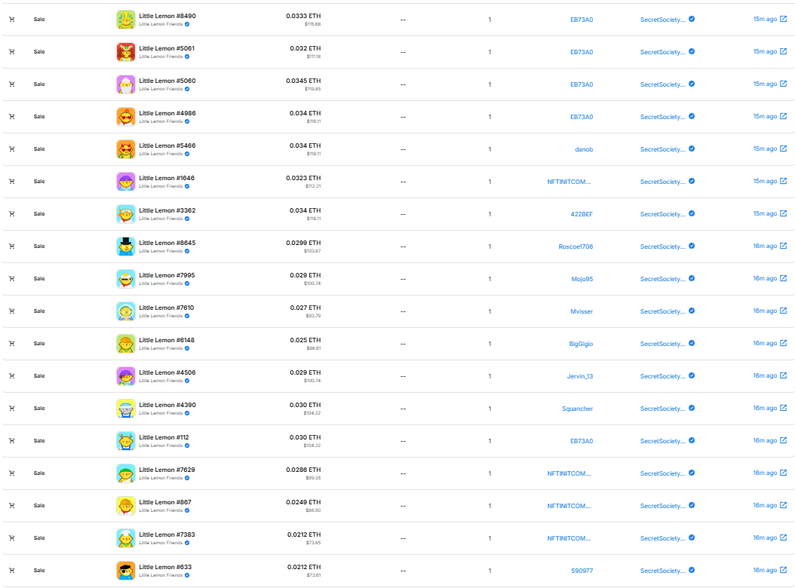
Apechain Spotlight, Nifty Island Partnership, and Community Growth
Apechain Spotlight Initiative
Community voted to participate in Apechain's Spotlight contest, which rewards active communities with $25,000-$100,000 sweeps.
Initial proposal passed to use $500 for a mini-floor sweep of DSNRS assets on Apechain.
DSNRS was chosen for its strong community, 3D avatar integration plans, and position in the top 3 of Apechain Spotlight.
A follow-up proposal passed to list all 17 DSNRS for 250-300 $APE for one month, aiming for 4-5x profit.
Nifty Island Partnership
Community approved a 3-month partnership with Nifty Island for $1,500 USD ($500/month), including:
2x workshops per month, hosted by Nifty Island
1x featured quest per month
1x co-hosted game night per month
The partnership aimed to increase SSoW presence in active web3 games and onboard more players to the gaming guild.
Community Education & Events
SSoW Whale Class announced: learn how to animate Pixel Whales using Aseprite.
Session led by @MonsieurKD on February 15th, focused on pixel art and animation skills.
Vault Management
Two major NFT sale proposals passed, both to be executed at best local prices over the following 3 months:
Sale of all 17 Wonders of the First: Character Proofs NFTs
Sale of the Multiverse of Gregs NFT
Nifty Island Expansion, Project Acquisition, and Community Events
Project Acquisition & New Leadership
Secret Society of Whales acquired by Champ / Champlify Labs.
Big Jon announced the transfer of ownership, vault, and assets, reflecting on the project's 4-year journey and major milestones.
Champ introduced his vision for community growth, education, web3 gaming expansion, and continued vault engagement.
Nifty Island Guild Launch & Events
SSoW Guild launched on Nifty Island with an airdrop of SSoW Guild Flags to all holders and Pixels Online Guild members. Flags can be placed on islands and are distributed on the Base network.
First Nifty Island Game Night held March 10th, with prizes including Blooms and SSoW Guild Flags.
Nifty Island SSoW Guild Onboarding AMA held March 17th, with NFT and flag giveaways.
Featured SSoW Quest in Nifty Island from March 17-20, with games on Whale Island and The Whale Games.
Additional Game Night on March 19th, continuing the quest and community engagement.
Community Vault & Legal Update
Wealthy Whales NFT legal clarification: Gen 1 and Gen 2 NFTs are no longer described as
'ownership' of the vault, to avoid securities risk. Instead, holders may be eligible for a
partial refund if the vault is ever liquidated. The community vault continues to operate with
proposal and voting rights as before.
March Madness Community Event
SSoW March Madness Challenge: 16 whales compete in a bracket challenge, with voting rounds
and prizes including an OG Whale NFT and Drip bot points.
$CIGAR Leaderboard & Token Conclusion
$CIGAR leaderboard finalized: over 2.3 billion $CIGAR turned in; the top 10 receive custom Discord commands and leaderboard recognition.
$CIGAR officially ended as a reward token; all turned-in $CIGAR was burned.
Community Workshops & Education
Content Creation Workshop hosted by Zombina, an active Ronin ecosystem creator, on
March 31st.
March Madness Finale, Nifty Island Innovations, Whale Shadows, and Vault Activity
March Madness Championship & Community Events
Round 3 and the championship round took place in early April.
SSoW #3955 was crowned the winner, with prizes awarded to participants and the whale holder.
Nifty Island: Workshops, Avatars, and Game Nights
Learn From a Legend Workshop — SSoW x Nifty Island hosted a streaming workshop with Jay B (ClassicsCrypto), offering tips for creators and in-game prizes.
New 3D Whale Avatars — "Rebel Whale" (limited edition of 10) and "Megabot Whale" (free claim for holders) released for Nifty Island.
Fishing Game Night — community event with Megabot whale avatars and prizes.
Vault Proposals & Activity
Moon Ape Lab 3D Mint — proposal passed to mint 3 Moon Ape Lab 3D NFTs for the vault.
Active Crypto Trading — proposal passed to allocate $1,500 for active trading on a CEX, with regular updates promised.
Apecoin Staking — proposal to purchase and stake 2,042 $APE with MAYC for yield.
Whale Shadows on Apechain
Whale Shadows launched as soulbound NFTs on Apechain, mirroring OG whale ownership.
Users can sync their whales using a web UI or ApeScan.
Guides and contract details provided for the community.
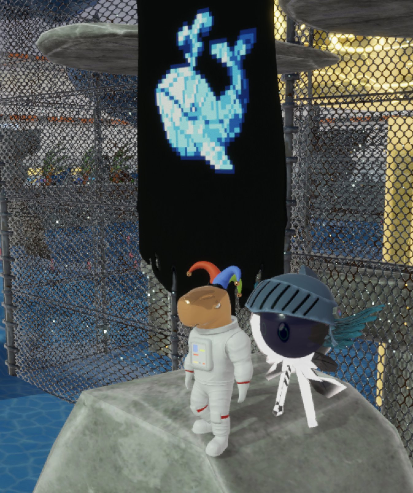
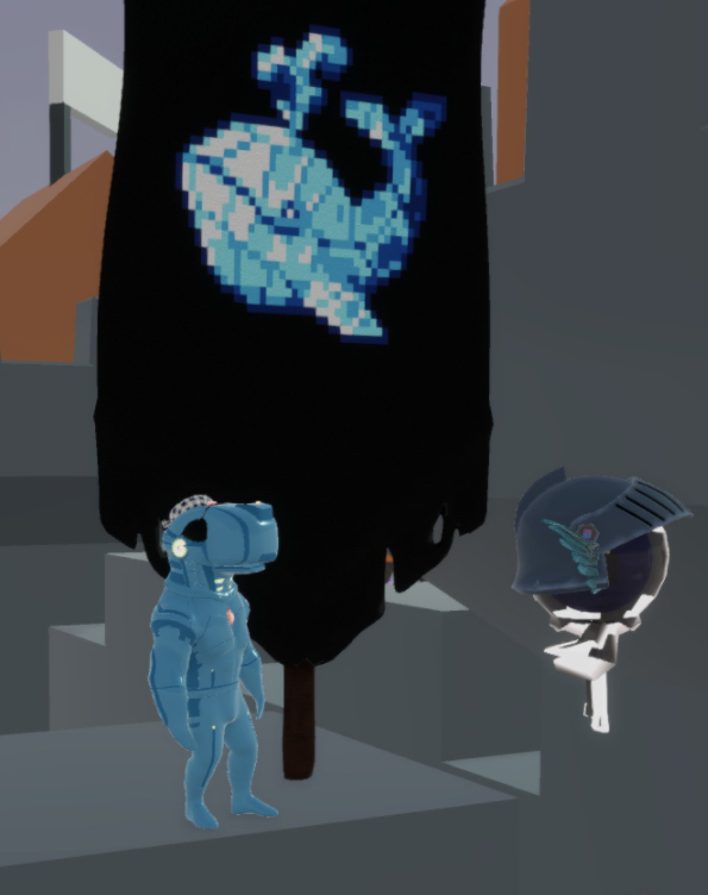
Nifty Island Victories, Avatar Releases, Workshops, and Vault Updates
Nifty Island — Island Brawl 2
SSoW participated in the second round with representatives from the community.
The SSoW team achieved an undefeated streak, winning all three matches.
All members of the Nifty Island SSoW community received in-game rewards (blooms) for the team's performance.
New Avatars on Nifty Island
Space Rebel Whale — launched as a free mint exclusively for SSoW holders and Guild Flag holders.
King Hades Whale — created in collaboration with Ordinary Goldfish and funded by community member support. Free mint for SSoW holders and Guild Flag holders; purchasable for others at 80 $island tokens.
Educational Workshops
Learn from a Legend — 3D Modeling with Blender, hosted by the Nifty Island Team, focused on improving community skills in 3D modeling.
Blender, a powerful and free open-source tool, was introduced and taught to the community for creating animated and interactive 3D content.
Vault and Community Initiatives
Nifty Island Partnership Extension: a proposal passed to extend the
successful partnership with Nifty Island for an additional three months, aiming to
strengthen community ties and expand collaborative opportunities.
Community Features and Enhancements
OpenSea Trait Offers Enabled: the collection owner activated the
trait-specific offer feature on OpenSea, allowing users to place offers on individual
whale traits.
The Secret Society of Whales continues to engage actively with its community through gaming
events, educational opportunities, and strategic vault initiatives, ensuring ongoing growth
and participation in the evolving web3 landscape.
Abstract Integration, Nifty Island Tournaments, and Server Enhancements
Abstract Integration
Whale Shadows Expansion:
Whale Shadows are now supported on the Abstract blockchain, expanding beyond Apechain.
Detailed documentation created via Gitbook to assist holders in understanding and syncing their Whale Shadows.
Shadows are special soul-bound NFTs that mirror SSoW 'OG' whales, updating automatically when OG whales move between wallets.
Nifty Island Events
Learn from a Legend — Basics of AI to 3D: a collaborative event
with Nifty Island featuring Zazaz007, focused on AI to 3D creation techniques and aimed
at enhancing community skills in emerging tech areas.
Nifty Island Tournament: SSoW participated in another Nifty Island
gaming tournament. Community members competed, and the event was livestreamed for
broader community engagement.
Server Enhancements
Discord Server Boost:
Community members increased server boosts, unlocking a custom server tag.
The boost initiative encourages continued community participation and visibility on Discord.
New Community Project
Bee Game (title TBD):
Announcement of a new web3 gaming project themed around bees and honey production.
Development led by community leadership, featuring unique NFT art by Champ's wife. More details and progress expected soon.